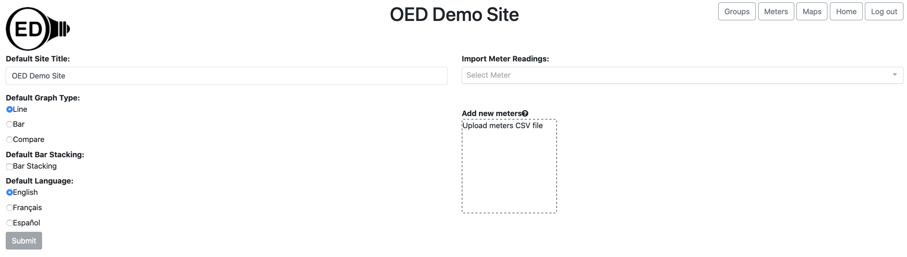

<div class="row">
	{% include_relative _version %}
	{% include help-sidebar OEDVersion=OEDVersion helpType=admin %}
	<div class="medium-8 medium-pull-4 columns" markdown="1">
		{% include adminInfo.html %}

		<h2 id="overview">Overview</h2>
		<p>The main admin page allows admins to change site preferences and control users.</p>

		<h2 id="usage">Usage</h2>
		<p>You must be <a href="../admin/#usage">logged in</a> as an admin to access these features.</p>

		<p>On the main OED page, click the "Admin Panel" button in
			the top,
			right (highlighted with a blue box) to go to the main admin page as shown in the next figure.</p>
		
		<p>You will now be on the main admin page as shown in the next figure. Each area of the page is described below.
			It is important that you click the "Submit" button at the bottom of the page to save your changes to the
			database so users will see your changes.</p>
		</p>
		

		<h3>Manage: Users</h3>
		<p>This allows admins to manage the users on the system. Help on this feature is on the <a
				href="../adminUser/">admin user</a> help page.</p>

		<h3>Default Site Title</h3>
		<p>Clicking the box below this label will allow you to enter or edit the OED site title shown at the top of each
			page. You should try to keep the title fairly short so that it does not take up too much space on each page.
			The
			title will remain blank until you enter one.</p>

		<h3>Default Graph Type</h3>
		<p>When a user first loads OED, you can control the <a href="../graphType/">graph type</a> that will appear.
			The
			user can still change to another graph type if they wish. The types of graphs you can choose mirror the ones
			allowed. Simply click the circle next to your choice. The default will be "Line" unless you change it.</p>

		<h3>Default Bar Stacking</h3>
		<p>The <a href="../barGraphic/#barStacking">bar stacking</a> option allows the bar graphic to show as single,
			stacked bar for each time frame. By default this is off. You can make it default to on by clicking the box
			next
			to "Bar Stacking". If checked, you can click to remove this choice.</p>

		<h3>Default Language</h3>
		<p>Clicking one of the languages below this label will set OED to use that language for its strings within the
			application for all users. The default language is "English" until you change it. Users can manually change
			the
			language if desired.</p>

		<h3>Default Time Zone</h3>
		<p>OED works with <a href="../time/">time</a> in a time zone neutral way. However, when data is exported
			from OED, the person may want to have information on the time zone of that data. The dropdown menu contains
			every possible standard time zone in the world. You can type at the top to search the list. The selected
			time
			zone becomes the default value if none is set for the <a href="../adminMeterViewing/">meter</a>. Note this
			has
			no impact on what is shown within OED and is strictly for export of data. The site value for time zone is
			overridden if a value is set for a specific meter.</p>

		<h3>Default Warning File Size</h3>
		<p>The <a href="../export/">exporting data</a> page discusses file size limits for raw exports. This value
			controls
			the size of what is considered a small file.</p>

		<h3>Default File Size Limit</h3>
		<p>The <a href="../export/">exporting data</a> page discusses file size limits for raw exports. This value
			controls
			the size of what is considered a large file which is also the same as the upper limit for a medium size
			file.</p>

		<h2 id="details">Details</h2>
		<p>The map graphic cannot be made the default graphic type at this time. We expect that will change soon.</p>
		<p>The popup help is set to be language settable but the translations are not yet done. The help pages on the
			web
			(linked from within the app help) are not translated but may be in the future.</p>
		<p>Once you set a time zone, you cannot unset the value to nothing. This is not commonly done but we plan to fix
			this in a
			future release.</p>
		<p>The feature to include time zone information with exported data is not yet available. The ability to set time
			zones is included now so sites can begin setting any necessary value.</p>
		<p>It is not difficult to include additional languages within OED. If you are willing to translate the strings,
			we
			can provide a file to type them in that can then be permanently stored with our source code so your site and
			other sites will always have that language. We will also modify OED to show that language choice on the
			admin
			page. We welcome the addition of languages to OED. If interested then please contact us.</p>
	</div>
</div>
